Help Page
Step
1: Choose
Tracking Method.
Step
2: Type
Folder Name.
Step
3: Choose objects to Track.
Step
4: Choose Frames to Display While Tracking.
Step
5: Choose the Type of Tracking.
Step
6: Select Additional Variables to Graph.
Step
7: Graph Data.
-----------------------------------------------------------------------------
Step 1: Choose
Tracking Method
Each tracking method will place the data in a different folder in the data folder in the usb drive.
|
Button selected for type of
tracking |
How the object is tracked |
Camera used for tracking
horizontal and vertical location |
Maximum frame rate (fps)(frames per second) |
Folder where data is stored |
|
Color |
Multiple objects will be tracked based on their color. Remove all other items of that color in the scene. |
Color |
60 |
data/color_o |
|
Infrared Object
Tracking |
|
Depth image from 2 infrared cameras |
90 |
data/infrared_o |
|
into other_o folder and graph |
You convert your spreadsheet with data into a *.csv file with the headers Time, x,y,z then you can use this graphing tool once it is put it in a folder in other_o. |
|
|
data/other_o |
|
Link to Skeletal Tracker Copy data into other_o and graph |
Use the online skeletal tracker then paste your folder of data into other_o and use this graphing tool for each of your joints. |
Any camera on computer, even a webcam |
20-25 |
data/other_o |
1. Color Tracking will track based on the object(s) color and place data in data/color_o folder
2. Obj_Tracking
will track based on
Step 2:
Type Folder Name:
Type in the folder you want to track to or graph from. Then hit ENTER.is the content of Step 2.
The list of folders is provided for you so that you can keep track of existing folders you have already used. Folders are not selectable since most of the time people are collecting new data and we want to use new names for the folders.
If you forget to provide a name, the computer will automatically generate a
name for you depending on the time. For example if it is 8:40 then the folder
name will be ‘minute 40’. Therefore, if you collect another
set of data at 8:42, your new folder name will be ‘minute 42’.
Step 3:
Choose objects to Track
Don't forget to enter the mass if you want momentum graphs.
Color tracking:
Use default colors (The colors match the playground ball colors from AppleRound).
1. Don’t forget to enter the correct radius for accurate tracking of the center of the ball.
2. The mass is required for momentum graphs.
Your predefined colors
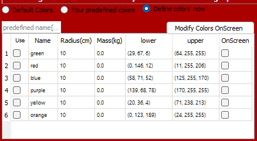
When you define your colors (below) and save them, they end up in the folder data/color_i and show up in ‘your predefined colors’ (above). That way you can cater your objects with your lighting to be used over and over again.
Select the objects you want here. The mass, radius, and color were saved before.
Define Colors Now
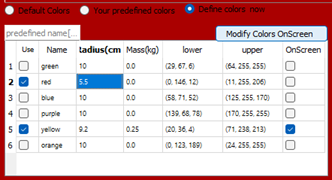
If you hit the ‘Modify Colors OnScreen’ (button), in the top right, you modify the mask to include the target colored object with current lighting conditions.
The lower and upper bounds in the table indicate the current (hue, saturation, value) of targeted colored object.
Originally, the yellow ball and the brown tabletop looked the same to the camera with these lighting conditions. The yellow ball is not the largest object within the bounds.
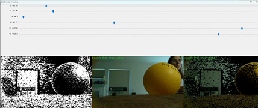
Left Image: The white is the color that will be tracked.
Center Image: The complete RGB image
Right Image: The RGB image minus all colors not tracked.
For this situation, the lower and upper saturation value needed to be increased to remove the brown tabletop and include more of the brightly colored ball. Other values were modified as well.
After modifying the values with the sliders, below, most of the ball is seen and the brown tabletop is not. See the white on the left image below representing the ball and yellow on the right image.
As the object moves, the light hitting the object will vary, so you may want to see the object at various points along its path of motion. Note, an open window will affect the lighting if you live in a place where clouds roll by constantly as we do in the great pacific northwest.
When done: Press (s) to save as the header on the window says.
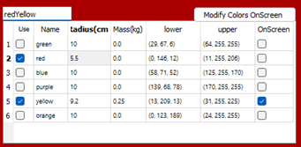
Verify the radius and mass of the objects are correct.
Now type in the ‘predefined name’ of the objects in the upper left and hit ENTER, so you can use these objects again by choosing ‘your predefined colors’
Object Tracking:
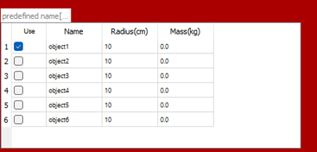
For object tracking, currently, we only track one object.

The most important piece of information is the radius for accurate location of the center of mass. Recording the mass is helpful if you are doing more than basic kinematics.
You can save the object name by pressing ENTER.
Step 4:
Choose Frames to Display While Tracking.
If you are just saving your own data from a spreadsheet as a *.csv in the data/other_o/your_folder_name/your_file_name.csv, then skip steps 4&5 and graph your data.
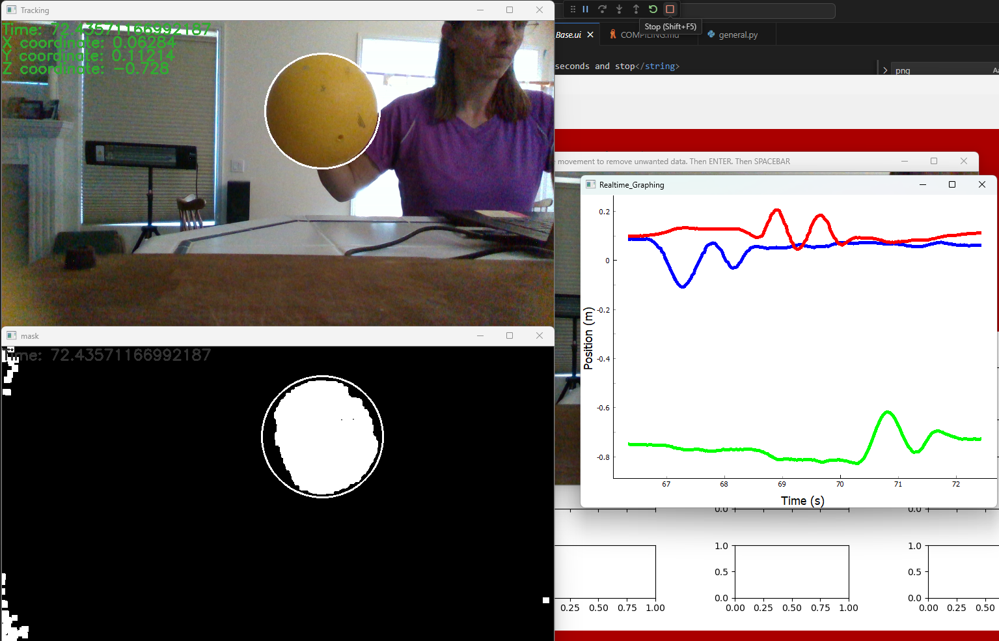
If you show the images as you track, the frame capture rate does slow down a bit, but is useful to see what you are doing as the images are being recorded, and to verify extraneous objects are not causing noise in the data. The white on the colored tracking mask shows which color is tracked.
Saving will also slow the data rate a bit.
Saving the videos are very useful in debugging.
Step 5:
Choose the Type of Tracking.
If tracking with D435i 3D camera...Choose the type of tracking you would like to use.
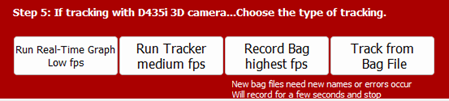
If you are just saving your own data from a spreadsheet as a *.csv in the data/other_o/your_folder_name/your_file_name.csv, then skip steps 4&5 and graph your data.
For all types of tracking from the program:
Color tracking:
Step 1: Use the mouse to create a rectangular box somewhere in the background. Any object found further back than this will not be tracked.
Step 2: Hit ENTER to verify the box.
Step 3: Hit SPACE BAR to begin tracking.
Step 4: Hit SPACE BAR to end tracking.
Object tracking:
Step 1: Use the mouse to create a rectangular box somewhere in the background. Any object found further back than this will not be tracked.
Step 2a: Hit ENTER to verify the box.
Step 2b: Select your ROI (Region of Interest), by putting a box around your object. For balls, I select just inside the ball so that the fingers are not included. Object tracking will track from the shape of the depth image, not by color or hue.
Step 3: Hit SPACE BAR to begin tracking.
Step 4: Hit SPACE BAR to end tracking.
Run Real-Time Graph
Note: Object tracking is too slow for real-time.
As you collect the data, a graph will display of the x,y,z position as a function of time. Users are to determine which color represents each axis. Below, the ball was oscillated horizontally from left to right along the x-axis, vertically along the y-axis, then horizontally away and towards the camera along the z-axis. This is seen on the blue, red, then green lines on the graph.
The color images and mask on the left show the tracking accuracy of the ball, time, and the position in 3D space.
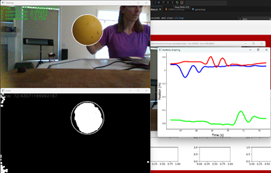
The data is saved as it is for all the tracker options, so you can show the 9 graphs on the right after you are done collecting the data and even find trendlines.
The data and images is in the folder you created:
Color tracking: 3D/data/color_o/your_folder
Run Tracker
Run tracker will track the object using the method chosen. Afterwards, the data, images, and videos are located:
Color tracking: 3D/data/color_o/your_folder
Object tracking: 3D/data/infrared_o/your_folder
The data is saved as it is for all the tracker options, so you can show the 9 graphs on the right after you are done collecting the data and even find trendlines.
Record Bag
This will track for about 6 seconds. You do not stop or start the recording. It begins right when you hit the record bag button.
For the highest speed data collection, choose object tracking and record bag (without showing images), then track from a bag file. Object tracking does not use the color camera (maximum 60 fps), instead it uses the infrared camera to track (maximum 90 fps).
NOTE: When you are not showing images, it is hard to know you are actually recording. See the popup window.
Record Bag will not track the object, just record a video of the scene using the frames you chose. Afterwards, the data, images, and videos are located:
Color tracking: 3D/data/color_o/your_folder
Object tracking: 3D/data/infrared_o/your_folder
Track from Bag File
Track
as you would for any object, including pressing SPACE BAR when you no longer
want to collect data. The recording was for a full 6 seconds, but you do not
have to track for that long.
Step 6:
Select Additional Variables to Graph.
Position and Velocity along
the x-,y-, and z-axes will all be graphs as a function of time.
For
the bottom set of graphs, you can choose between graphing the acceleration or
the momentum.
Velocity and Acceleration
graphs are found by taking surrounding points and finding a weighted slope.
Momentum graphs are found my
multiplying the mass used from the table and the velocity data points.

Step 7:
Graph Data
Step
1: Hit the Graph Data Button to see 9 graphs.
All
graphs are zoomed to the same domain along the time axis. The time is from the
second that tracking started. The location of the curser can be seen in the
upper right hand part of the screen as the graphing toolbar is along the top of
the app.
Shown
below is one object (multiple colored objects can be tracked).
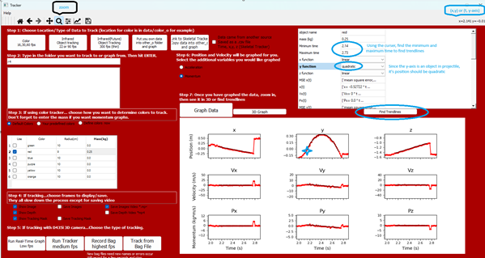
Trendlines
All
Trendlines are calculated from position graphs based on the user’s type
of function they chose from the drop down menu.
The
velocity horizontally along the x-axis for this object v(t)=-0.527

since
the user assumed a linear position graph. Since the mean square error is
extremely small, the trendline is a good fit.
The
velocity vertically along the y-axis for this object v(t)=-9.238t+22.39 is
approximated with the quadratic fit

And
the mean square error is decently small:
 .
.
Reviewing
the object that was tracked in the video, the ball’s center was not
exactly in the center, but air drag is negligible, so the acceleration should
be 9.8 m/s/s. The acceleration’s error rate is 5.7%.
Zooming
in on each graph shows the values even more clearly without need for trendlines
for rough estimates:
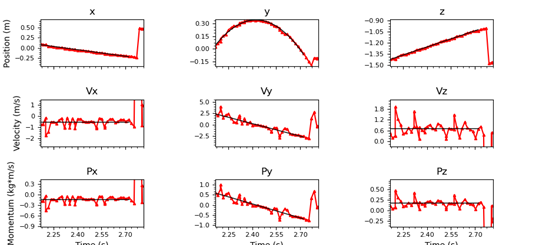
Hitting
the 3D Graph button reveals the position (x,y,z) at various points in time. You
can rotate for a different perspective. The 3D graph will display whatever the
current zoom is.
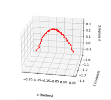
Spreadsheets:
Scrolling
down the trendline equations reveals where all of the data is located, even a
spreadsheets you can use to make calculations or copy and paste into another graphing
program such as DESMOS.com for any type of trendline you choose.

Columns
B, C, and D show the coefficients of the equations to be used to make
calculations.

Trendline
files are also created. The one below is the first few lines for just the data that
was zoomed in upon starting at t=2.15 seconds into the data collection.
Notice
the velocity, acceleration, and momentum are also stored here to create the
graphs.
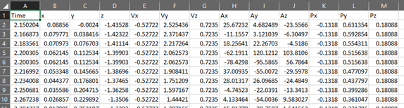